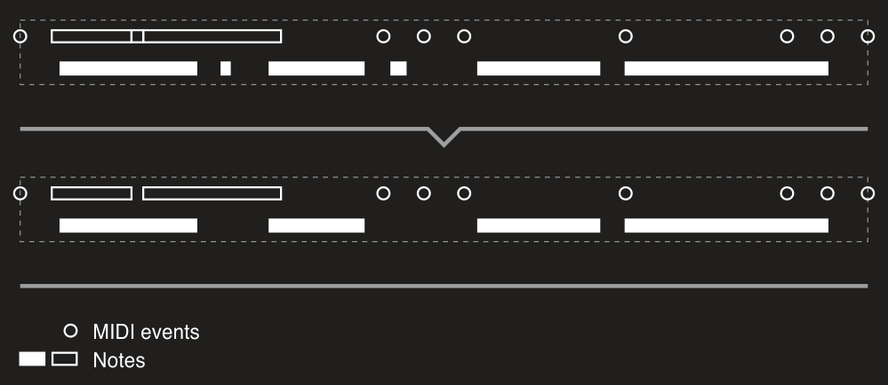
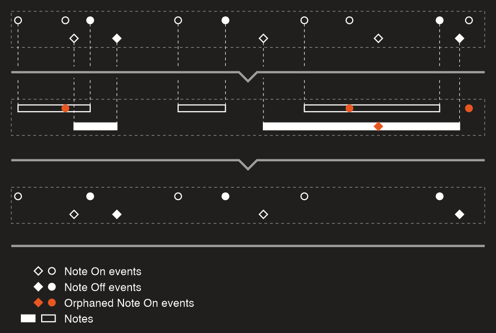
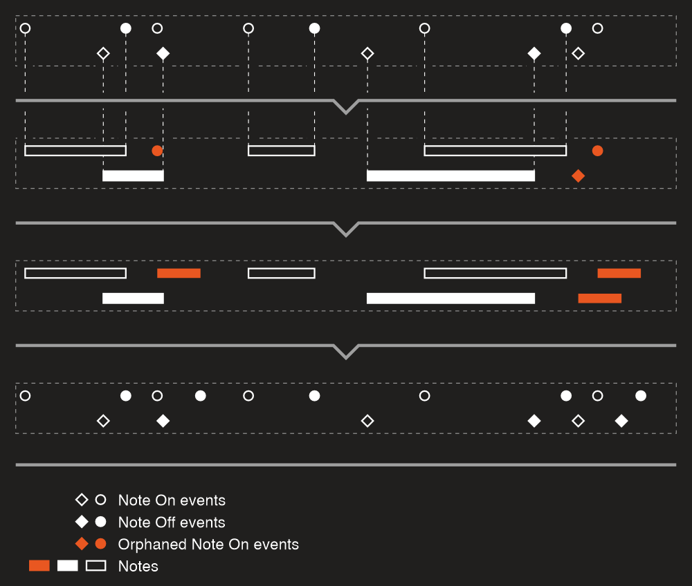
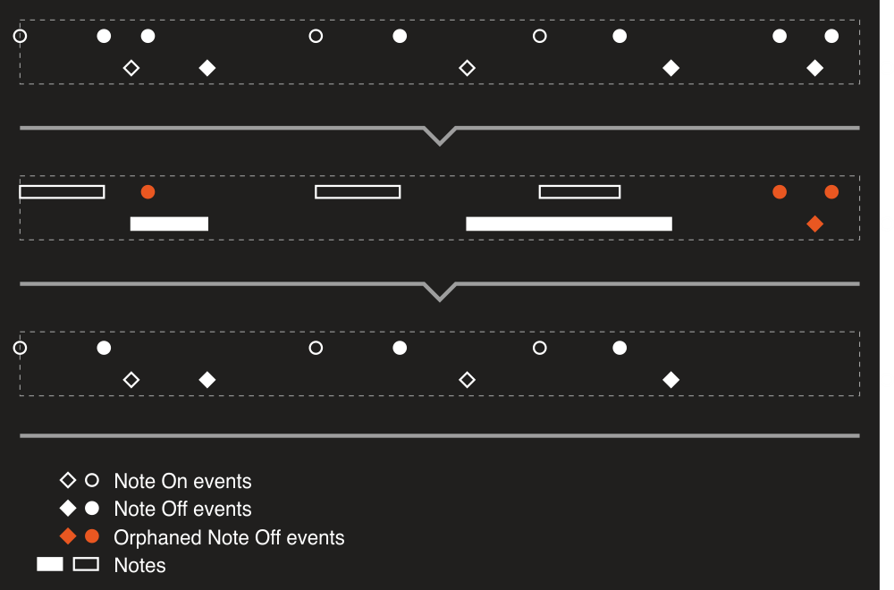
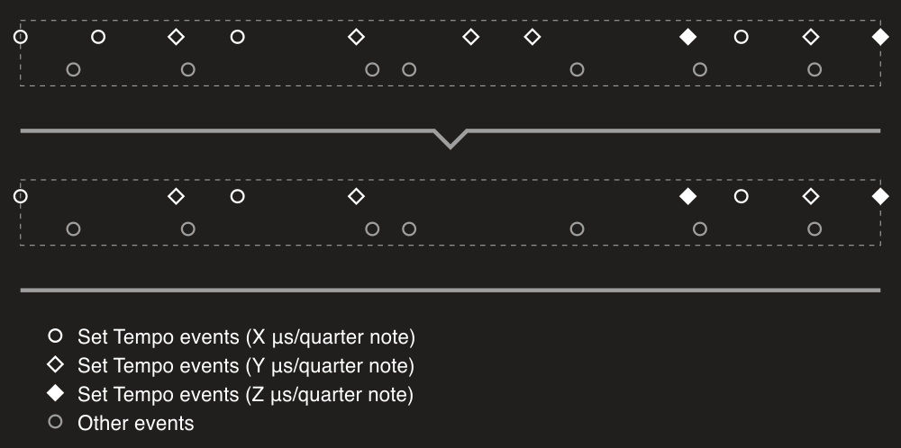
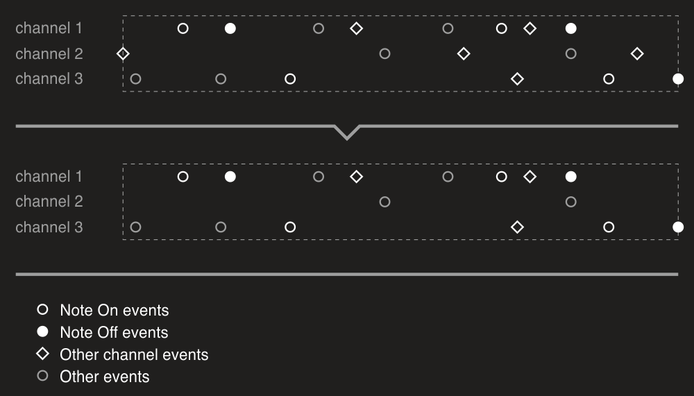

Sanitizer
DryWetMIDI provides a tool to clean a MIDI file by removing redundant events and so on – Sanitizer. The process can be run via the Sanitize extension method:
midiFile.Sanitize();
It's a simple example that shows how you can perform all supported cleaning procedures. You can pass an instance of the SanitizingSettings to the method turning off or on desired options:
midiFile.Sanitize(new SanitizingSettings
{
NoteMinLength = MusicalTimeSpan.Quarter,
RemoveEmptyTrackChunks = false
});
Here we're removing all notes that are shorter than 1/4 leaving track chunks without events untouched. Please see detailed descriptions of settings below.
Settings
The Sanitizer class provides a rich set of options you can manage sanitizing of a MIDI file with.
NoteMinLength
NoteMinLength property of the SanitizingSettings sets a minimum length for notes within an input file. All notes that are shorter than this value will be removed.
The default value is null which means notes can have any length. The same behavior can be achieved with a value of zero length. This should be read as "a note should not be removed if its length is zero or greater".
Image below shows how you can get rid of short notes with this option:

Please notice that how notes will be detected is handled by the NoteDetectionSettings property. You can read more about the NoteDetectionSettings class in the Getting objects: GetNotes: Settings article.
NoteMinVelocity
NoteMinVelocity property of the SanitizingSettings sets a minimum velocity for notes within an input file. All notes with velocity below this value will be removed. The default value is zero which means notes can have any velocity (zero or above).
For example, if we have such a file with two notes (with numbers of 70 and 50):
var midiFile = new MidiFile(
new TrackChunk(
new NoteOnEvent((SevenBitNumber)70, (SevenBitNumber)50),
new NoteOffEvent((SevenBitNumber)70, (SevenBitNumber)0),
new NoteOnEvent((SevenBitNumber)50, (SevenBitNumber)40),
new NoteOffEvent((SevenBitNumber)50, (SevenBitNumber)0)));
then this instruction will remove the second one:
midiFile.Sanitize(new SanitizingSettings
{
NoteMinVelocity = (SevenBitNumber)45
});
RemoveDuplicatedNotes
RemoveDuplicatedNotes property of the SanitizingSettings determines whether duplicated notes should be removed or not. The default value is true.
Notes are considered duplicated when they are meet all the following conditions:
- same note number;
- same channel;
- same time;
- same length.
For example, if we have such a file with two notes (with number of 70 and length of 20):
var midiFile = new MidiFile(
new TrackChunk(
new NoteOnEvent((SevenBitNumber)70, (SevenBitNumber)50),
new NoteOnEvent((SevenBitNumber)70, (SevenBitNumber)40),
new NoteOffEvent((SevenBitNumber)70, (SevenBitNumber)0) { DeltaTime = 20 },
new NoteOffEvent((SevenBitNumber)70, (SevenBitNumber)0)));
then this instruction will remove the second one:
midiFile.Sanitize();
RemoveEmptyTrackChunks
RemoveEmptyTrackChunks property determines whether track chunks without MIDI events should be removed or not.
OrphanedNoteOnEventsPolicy
In some MIDI files you can encounter Note On events without corresponding Note Off ones. For example, here we're creating a file with the first event is an orphaned Note On one:
var midiFile = new MidiFile(
new TrackChunk(
new NoteOnEvent(),
new TextEvent("A")));
Of course how notes are detected is controlled by the NoteDetectionSettings property. As stated above you can read more about the NoteDetectionSettings class in the Getting objects: GetNotes: Settings article.
Sanitizer allows to handle such orphaned Note On events in different ways with the OrphanedNoteOnEventsPolicy property.
Following image shows how OrphanedNoteOnEventsPolicy.Remove option (which is the default one) works:

But what if such orphaned Note On events are just a result of corresponding Note Off ones were lost for some reason? You'll probably want to restore notes. In this case you can use OrphanedNoteOnEventsPolicy.CompleteNote option. It will add a Note Off event for each orphaned Note On one. The length of the note is controlled by the NoteMaxLengthForOrphanedNoteOnEvent property. Please see the image below which describes the process:

As you can see from the name of the property, it's the maximum length of a note. If Note On event with the same channel and note number is encountered during the new note, the note's length will be reduced so its end will be at the start of a next note:

RemoveOrphanedNoteOffEvents
Obviously Note Off events can be orphaned too (see OrphanedNoteOnEventsPolicy above) and you can remove such events too using the RemoveOrphanedNoteOffEvents property:

RemoveDuplicatedSetTempoEvents
If we create a MIDI file like that:
var midiFile = new MidiFile(
new TrackChunk(
new SetTempoEvent(100),
new TextEvent("A"),
new SetTempoEvent(100),
new TextEvent("B"),
new SetTempoEvent(200),
new TextEvent("C"),
new SetTempoEvent(200)));
we'll notice that the second and last Set Tempo events are redundant. The file above is equivalent to this one:
var midiFile = new MidiFile(
new TrackChunk(
new SetTempoEvent(100),
new TextEvent("A"),
new TextEvent("B"),
new SetTempoEvent(200),
new TextEvent("C")));
RemoveDuplicatedSetTempoEvents property allows to remove redundant Set Tempo events:

So Set Tempo events are considered duplicated when they are have the same microseconds per quarter note value.
RemoveDuplicatedTimeSignatureEvents
RemoveDuplicatedTimeSignatureEvents does the same actions as the RemoveDuplicatedSetTempoEvents one but for duplicated Time Signature events.
Time Signature events are considered duplicated when they are meet all the following conditions:
- same numerator;
- same denominator;
- same clock ticks per click;
- same thirty-second notes per beat.
RemoveDuplicatedPitchBendEvents
RemoveDuplicatedPitchBendEvents does the same actions as the RemoveDuplicatedSetTempoEvents or RemoveDuplicatedTimeSignatureEvents one but for duplicated Pitch Bend events.
Pitch Bend events are considered duplicated when they are meet all the following conditions:
- same pitch value;
- same channel.
RemoveDuplicatedSequenceTrackNameEvents
RemoveDuplicatedSequenceTrackNameEvents does the same actions as the RemoveDuplicatedSetTempoEvents or RemoveDuplicatedTimeSignatureEvents one but for duplicated Sequence/Track Name events.
Sequence/Track Name events are considered duplicated when they have the same text.
RemoveDuplicatedControlChangeEvents
RemoveDuplicatedControlChangeEvents does the same actions as the RemoveDuplicatedSetTempoEvents or RemoveDuplicatedTimeSignatureEvents one but for duplicated Control Change events.
Control Change events are considered duplicated when they are meet all the following conditions:
- same control number;
- same control value;
- same channel.
RemoveEventsOnUnusedChannels
If a MIDI file doesn't contain notes on some channel, we can safely remove all events on that channel. For example, the Control Change event on channel 2 in the following example is redundant:
var midiFile = new MidiFile(
new TrackChunk(
new ControlChangeEvent { Channel = (FourBitNumber)2 },
new ControlChangeEvent { Channel = (FourBitNumber)5 },
new NoteOnEvent { Channel = (FourBitNumber)5 },
new NoteOffEvent { Channel = (FourBitNumber)5 }));
RemoveEventsOnUnusedChannels property turns on or off removing such channel events that have no effect since there are no notes on those channels:

Trim
Trim property allows to automatically remove an empty space at the start of a MIDI file. For example:
var midiFile = new MidiFile(
new TrackChunk(
new TextEvent("A") { DeltaTime = 20 }),
new TrackChunk(
new TextEvent("B") { DeltaTime = 30 },
new TextEvent("C") { DeltaTime = 15 }));
Here we have a silence of 20 ticks at the start of the file. So after sanitizing with Trim property set to true we will have this file:
var midiFile = new MidiFile(
new TrackChunk(
new TextEvent("A") { DeltaTime = 0 }),
new TrackChunk(
new TextEvent("B") { DeltaTime = 10 },
new TextEvent("C") { DeltaTime = 15 }));
The default value is false since this behavior can be undesired.